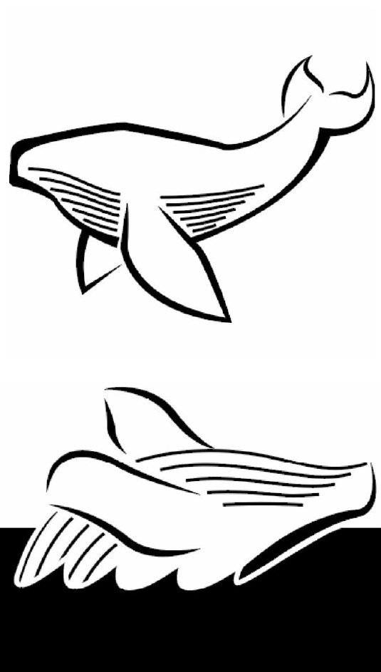

6" x 6", Intro to Computer Graphics
The very first project I ever did for my Graphic Design corse was to choose an animal and create two distinct pictograms from it. They had to be readible as the animal of choice when printed both at 6 inch and 1 inch squares.
It didn’t take long after this project was assigned to settle of the humpback whale as my animal of choice. They simply have a shape that I find extremely interesting, especially when viewed underwater and from the side. It was challenging, therefore, to come up with a second pose to work with, but the iconic breaching that humpbacks do was perfect for it. While not specifically created for any sort of larger project, these pictograms could easily make for strong icons in a wayfinding system or, of course, a logo.
Created in Illustrator.